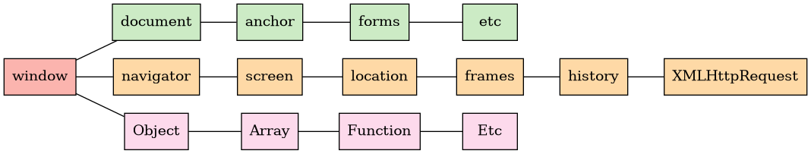

Como otros lenguajes, JS tiene un conjunto de objetos predefinidos que ayudan a manejar y obtener información del entorno en el que se ejecuta (navegador, ventana, documento, etc.)
Proporciona variables y funciones que estarán disponibles en cualquier parte del código.
Por ejemplo la función alert() es en realidad window.alert().
Nota: una variable definida como var se incorpora al objeto window (var a → window.a), pero si está definida como let no lo hará. Aún así esta es una mala práctica y si es necesario sería mejor declararla directamente (por ejemplo: window.a = 45;).
El objeto window encapsula otros muchos objetos interesantes y representa la propia ventana del navegador (por ejemplo window.innerHeight indica la altura interior de la ventana).

Referencia: https://www.arkaitzgarro.com/javascript/capitulo-14.html
Propiedades interesantes:
Referencia: https://es.javascript.info/popup-windows
El objeto window tiene un conjunto de métodos que permiten modificar algunos aspectos de la ventana, pero cada vez hay menos navegadores que lo permiten: resizeBy(), moveBy(), resizeTo()...
Sí funcionan:
Podemos abrir una ventana con una URL concreta: window.open("https://example.com");
O podemos crear una nueva ventana con el contenido que necesitemos:
let newWin = window.open("about:blank", "hello", "width=200,height=200");
newWin.document.write("Hello, world!");
Esa nueva ventana también podrá acceder a su padre con window.opener:
newWin.document.write( "<script>window.opener.document.body.innerHTML = 'Test'<\/script>" );
Sólo podemos escribir en las ventanas que estén creadas desde el mismo origen que la nuestra por motivos de seguridad (no puedo abrir Gmail y usar mi script para leer el correo).
Con newWin.close() se puede cerrar la ventana creada.
Si creamos las ventanas programáticamente, se pueden compartir datos de la ventana padre a la hija otra si los declaramos con var y usamos un servidor web. Imagina este formulario en el index.html:
<form action=""> <label for="txtProducto">Nombre</label><br> <input id="txtProducto" type="text" value="Drones"><br> <label for="txtCantidad">Cantidad</label><br> <input id="txtCantidad" type="number" value="37"><br> <button id="btnFactura" type="button">Crear factura</button> </form>
Con este código JS recuperamos los datos de los textboxes y abriremos una ventana:
function crearFactura(){
producto = document.getElementById('txtProducto').value;
cantidad = document.getElementById('txtCantidad').value;
window.open("crearFactura.html");
}
var producto; // tenemos que declararlos con var para que se puedan
var cantidad; // leer desde la ventana hija
document.getElementById('btnFactura').addEventListener('click', crearFactura);
El fichero crearFactura.html podría tener este contenido:
<h1>Factura</h1>
<table border="1">
</tr><th>Producto</th><th>Cantidad</th></tr>
</tr>
<td id="celdaProducto"></td>
<td id="celdaCantidad"></td>
</tr>
</table>
<script>
document.getElementById('celdaProducto').innerHTML=window.opener.producto;
document.getElementById('celdaCantidad').innerHTML=window.opener.cantidad;
</script>
Nota: Si queremos imprimir con window.print() podemos añadir <html lang="en" moznomarginboxes mozdisallowselectionprint> para que no se muestre el encabezado y el pie de la página en Firefox.
Otra manera de pasar información de una ventana padre a una hija es usando la propia URL en el método open y luego recuperarlos desde la hija.
Por ejemplo, si hacemos una búsqueda en google podríamos obtener esta URL: https://www.google.com/search?client=firefox-b-d&q=transition+text-shadow
Lo que haremos será crear un objeto URL y usar los métodos para recuperar los parámetros:
url = new URL(window.location.href)
let valorClient = url.searchParams.get("client");
console.log( valorClient ); //"firefox-b-d"
Dada esta función:
function muestraMensaje() {
console.log("Este mensaje se muestra cada segundo");
}
Crear un temporizador:
let idTemp = setTimeout( muestraMensaje, 3000);
Crear una tarea repetida:
let idTemp = setInterval(muestraMensaje, 1000);
Cancelar el temporizador
clearTimeout(idTemp);
Contiene todos los elementos HTML de la web y permite crearlos, eliminarlos, modificarlos, recuperarlos, etc. Aunque eso lo veremos un poco más adelante.
Veamos algunos de los más importantes con cierta profundidad.
En JS existen 8 tipos de datos:
Podemos averiguar el tipo de un dato con el operador typeof.
Representa un número (el valor NaN está definido aquí y por eso se considera un número también).
Existen los valores Infinite y -Infinite.
Nota: podemos recuperar los datos de un input type="number" como número usando su propiedad valueAsNumber. Si usamos value la recuperaremos como cadena de caracteres.
Métodos y propiedades importantes de la cadena s="Hola caracola"
let edad = 42;
let msj = `tienes ${edad} y el curso que viene ${edad + 1}`;
Ejercicio1: Ve a la web www.aliexpress.com y abre la consola. Recupera la URL y reemplaza el primer .com por un .es y pásala a mayúsculas. ¿En qué posición empieza el último ES que aparece?
Ejercicio 2: partiendo de "caca de la vaca" crea una cadena que tenga un - entre cada letra. Es decir: c-a-c-a- -d-e- -l-a- -v-a-c-a
Ejercicio 3: Partiendo del navigator.userAgent suma todos los números que aparecen en la cadena de caracteres.
Por ejemplo si el userAgent es Firefox/117.0 el resultado será 9 (1+1+7+0).
Nota: tal vez las funciones isNaN() y Number() puedan serte de utilidad.
Ejercicio 4a: Partiendo de "echa el freno, Magdaleno" haz que se cuenten el número de vocales que tiene el texto.
Ejercicio 4b: haz que se devuelva una cadena de caracteres con el número de veces que aparece cada vocal. Por ejemplo "a3, e4, i0, o2, u0"
Ejercicio 5: Los reyes magos te encargan crear un método que permita averiguar qué hay en los regalos ya envueltos, por ejemplo:
//******* //* aro * //******* let a="*******\n* aro *\n*******"; let p="***********\n* patines *\n***********"; let ao="*****************\n* anillo de oro *\n*****************"; console.log( desenvolver(a) ); // "aro" console.log( desenvolver(ao) ); // "anillo de oro"
Nota: intenta resolverlo sin usar un bucle.
Ejercicio 5b: Haz justo lo contrario, una función que reciba una cadena de caracteres y la devuelva envuelta, por ejemplo:
console.log( envolver("reloj") ); // *********\n* reloj *\n*********
Nota: intenta resolverlo sin usar un bucle.
Ejercicio 6: Un editor que utilizas en tu web te devuelve las listas creadas con Markdown así: "* Uno\n* Dos\n* Tres \n* Cuatro\n".
Crea una función que reciba esas cadenas de caracteres y devuelva otra equivalente de una lista HTML:
"<ul><li>Uno</li><li>Dos</li><li>Tres</li><li>Cuatro</li></ul>"
Ejercicio 7: Crea una función que indique si una cadena de caracteres es un palíndromo. Lo es porque si no se tienen en cuenta los espacios (ni otros símbolos de puntuación) se lee igual de izquierda a derecha y de derecha a izquierda. Por ejemplo "arriba la birra" o "someto votemos".
Ejercicio 8: Crea una función que se llame reemplaza que reciba tres parámetros:
Devolverá una nueva cadena que sea la original reemplazando las ocurrencias de cada letra del segundo parámetro por la correspondiente letra del tercer parámetro.
Por ejemplo: reemplaza("pues yavestruz", "eus", "*xp") devolverá "px*p yav*ptrxz"
Por ejemplo: reemplaza("pues yavestruz", "aeiou", "123") devolverá un error porque la tercera cadena no tiene la longitud de la segunda.
Posible solución 4a: "echa el freno, Magdaleno".replace(/[^aeiou]/g, "").length
También ao.slice(ao.indexOf(" ")+1,ao.lastIndexOf(" "))
Posible solución de 4b: ` a${ao.replaceAll(/[^a]/g,"").length} e${ao.replaceAll(/[^e]/g,"").length} ... `
Otra solución de 4b: ` a${a.length - a.replaceAll("a","").length} e${a.length - a.replaceAll("e","").length} ...`
Posible solución 5: a.replaceAll("*","").replaceAll("\n", "").trim()
Posible solución 5b: "".padStart(r.length+4,"*") +"\n* " + r + " *\n".padEnd(r.length+7,"*")
Posible solución 6: "<ul>"+"* Uno\n* Dos\n* Tres \n* Cuatro\n".replaceAll("* ","<li>").replaceAll("\n", "</li>") +"/ul>";
Los caracteres unicode se pueden representar de varias maneras (UTF-8 es la más popular, pero también están UTF-32 o UTF-16) y no siempre los grafemas (graphemes) de UTF-8 se representan correctamente como un único caracter si están compuestos por más de un endpoint (por ejemplo el caracter á puede ser un único endpoint o dos endpoint: a + ´ dependiendo de cómo decidamos codificarlos, porque Unicode permite ambos). Esto puede dar a situaciones extrañas en las que .length no indique correctamente el número de caracteres como debería hacer en todas las ocasiones.
"❌".length //1 "üòÄ".length // 2 "ü§¶‚Äç‚ôÄÔ∏è".length // 5 "ü§¶‚Äç‚ôÄÔ∏è".substring(3,6) // "‚ôÄÔ∏è" "ü¶∏ü躂Äç‚ôÇÔ∏è".substring(0,2) // "ü¶∏" , longitud 7 = ü¶∏ + color de piel + ‚ôÇÔ∏è "üë©ü躂Äçü¶∞".length // 7, üë© + color de piel + ü¶∞ (pelo pelirrojo)
Y también tenemos casos como estos:
"Å" === "Å" // false, la combinación A+º es diferente a directamente Å
Permite realizar operaciones matemáticas complejas e incluye símbolos y valores:
function getRandomIntInclusive(min, max) {
min = Math.ceil(min);
max = Math.floor(max);
return Math.floor(Math.random() * (max - min + 1) + min);
}
Representa una fecha y hora. Es bastante complejo, por lo que se recomienda tener a mano la documentación siempre que se vaya a trabajar con fechas.
Las fechas se almacenan como el número de milisegundos transcurridas desde la fecha base.
https://developer.mozilla.org/en-US/docs/Web/JavaScript/Reference/Global_Objects/Date/Date
Nota: podemos recuperar los datos de un input type="date" como número usando su propiedad valueAsDate. Si usamos value la recuperaremos como cadena de caracteres.
let f = new Date("2031-10-17"); // 17 de octubre de 2031
let f2 = new Date( Date.now()); //fecha y hora actual
let f3 = new Date( 2026, 11, 30); // 30 de diciembre de 2026 (0=enero, 1=febrero...)
console.log( "Año: " + f.getFullYear() );
console.log( "Mes: " + f.getMonth()+1 ); //0=Enero, 1=Febrero, ...
console.log( "Día: " + f.getDate() );
console.log( f2.toLocaleDateString() );
console.log( f2.toLocaleTimeString() );
console.log( f2.toLocaleString() );
Nota importante: si no usas el operador new para crear el objeto, obtendrás una cadena de caracteres con la fecha actual.
let d1 = new Date("2027-12-23"); //crea un objeto de tipo fecha
let d2 = Date("2027-12-23") //crea una cadena de caracteres con la fecha actual
Crear una fecha desde una cadena de caracteres tiene algunas inconsistencias entre navegadores (si no se usa el separador "-").
Además hay que tener en cuenta que el constructor del objeto Date realiza un overflow y underflow si puede hacerlo para que la fecha sea correcta. Documentación: https://developer.mozilla.org/en-US/docs/Web/JavaScript/Reference/Global_Objects/Date/Date
If any parameter overflows its defined bounds, it "carries over". For example, if a monthIndex greater than 11 is passed in, those months will cause the year to increment; if a minutes greater than 59 is passed in, hours will increment accordingly, etc.
Therefore, new Date(1990, 12, 1) will return January 1st, 1991; new Date(2020, 5, 19, 25, 65) will return 2:05 A.M. June 20th, 2020.
Similarly, if any parameter underflows, it "borrows" from the higher positions. For example, new Date(2020, 5, 0) will return May 31st, 2020.
Una manera sencilla de validar fechas es la siguiente:
/**
* Valida si una fecha en formato AÑO-MES-DÍA es válida
* @param {String} dateStr - Fecha en formato AÑO-MES-DÍA
* @returns Boolean
*/
function isValidDate(dateStr) {
const [year, month, day] = dateStr.split('-');
const date = new Date(year, month - 1, day); // el mes comienza a contarse en 0
return date.getFullYear() == year &&
date.getMonth() == month - 1 &&
date.getDate() == day;
}
Otros recursos y bibliotecas:
Murieron hace mucho tiempo, los <iframes> se siguen usando, pero no demasiado más allá de alguna curiosidad. Por ejemplo Codepen (https://codepen.io/) los usa y también Google para que insertemos vídeos de Youtube o mapas de Google Maps en nuestras webs.
Ejercicio 3a fechas: pide a un usuario que introduzca el día mes y año de una fecha usando tres input type="number" y a continuación una más pero usando un input type="date". A partir de esos datos construye dos objetos Date y muestra el número de días entre ambas.
Pista: Puedes convertir los objetos Date a tiempo los milisegundos transcurridos desde la fecha base con getTime(), restarlas y a partir de ese dato calcular la cantidad de días. O directamente puedes restarlas.
Ejercicio 3a fechas 2: Crea una parte de una web de reservas hoteleras que conste de dos una división con id="resultado", sendos input type="date" (uno para la fecha de entrada y otro para la de salida) y un botón con la etiqueta Reservar. En la web se pedirá al usuario que introduzca las fechas y cuando se pulse el botón con la etiqueta Reservar ocurrirá lo siguiente:
Nota: se puede recuperar la información de un input type="date" directamente como un objeto fecha usando valueAsDate en lugar de value
Javier Mancera Fernández
https://www.youtube.com/@Profesorinfo-x